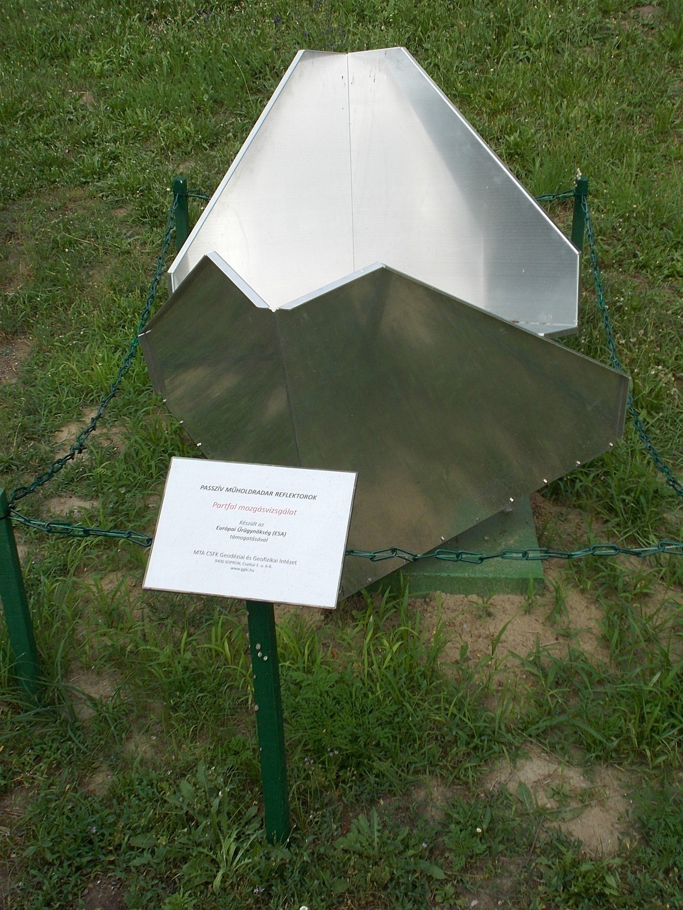

연구 과제
SAR 검보정 특성 연구

주요 내용·성과
- SAR 점표적 시뮬레이터 기반 L대역 간섭 신호 영상 왜곡 분석 및 영상 품질 지표(응답폭, PSLR, ISLR) 평가 (한국전자파학회논문지 23(12), 2012, pp. 1388–1398)
- 사사 원문: "본 논문은 국방광역감시 특화연구센터 프로그램의 일환으로 방위사업청과 국방과학연구소의 지원으로 수행되었다."
관련 논문·발표
- L-대역 SAR 영상에서의 간섭신호 영향 분석 (2012)